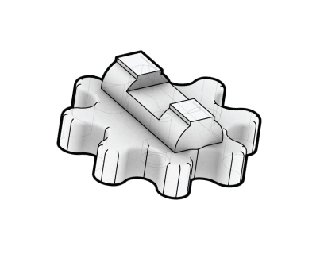
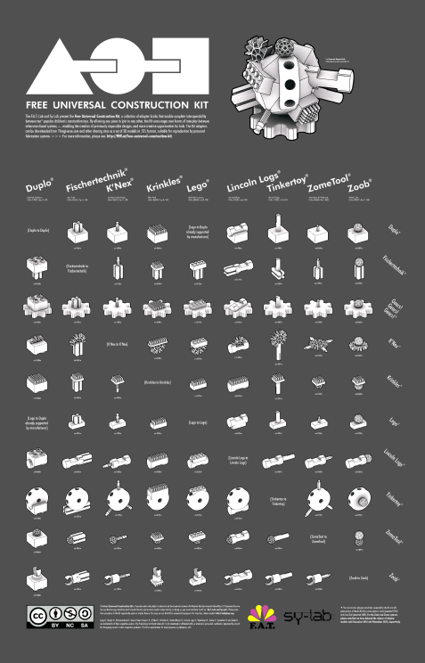
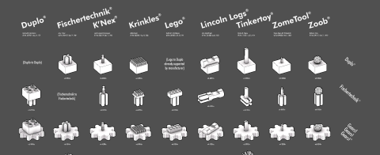

Grupo 3
PCOMP 2024-2
Sofía Becker, Antonia León, Amelia Molinos, Sofía Navarrete, Mónica Olivos
Las grandes marcas de kits de construcción son muy independientes entre sí. No podemos conectar una pieza de Lego con una de un juego de madera,o con un duplo, pero qué pasaría si es que pudiéramos hacer esto, la respuesta es simple...
creatividad sin límites.
Hackers en
Arte y Diseño
Arte y Diseño
FREE UNIVERSAL CONSTRUCTION KIT
¿QUÉ ES
el Free Universal Construction Kit?
el Free Universal Construction Kit?
Golan Levin



CONECTANDO IMAGINACIÓN:
La historia de Innovación detrás de
Free Universal Construction Kit
La historia de Innovación detrás de
Free Universal Construction Kit
La MODULARIDAD y VARIABILIDAD
de los sistemas de construcción
de los sistemas de construcción

Creado por el artístico ingeniero, Golan Levin, el Free Universal Construction Kit es una matriz de 80 piezas adaptadoras que permiten la conexión entre piezas de los distintos juguetes de construcción para niños, permitiendo que cualquier pieza pueda conectarse a otra, rompiendo con las barrares establecidas por los diferentes diseños de las empresas.
Con ello, este kit logra darles total libertad a los niños y los alienta a crear sin el límite de que las piezas no conecten.
Con ello, este kit logra darles total libertad a los niños y los alienta a crear sin el límite de que las piezas no conecten.
Si bien puede parecer un producto, este proyecto no lo es, de hecho, como señala Levin, el FreeUniversal Construction Kit pretende ser una provocación, no solo busca generar una mayor entretención en los niños, sino también una reflexión en masa sobre la propiedad intelectual, la cultura del código abierto y la ingeniería inversa como una práctica cultural.
Así es como dejan a libre disposición del público un kit de descarga gratuita desde varios sitios como un modelo 3D apto para ser reproducidos por dispositivos de fabricación personal, como, por ejemplo, una impresora 3D de bajo costo y código abierto.
¿COMO SE LLEGO AL KIT?
Golan Levin, hijo del creador de Free Universal Construction kit decidió construir un auto a sus 4 años. Este, se enfrentó a un desafío: sus Tinkertoys, que quería utilizar para el chasis del vehículo, no calzaban a sus Legos, las piezas que quería utilizar para las ruedas.
Su padre, artista, hacker y profesor, se enfrentó al desafío de romper la individualidad de las piezas de distintos juguetes de construcción buscando adaptar las diferentes piezas.
Por eso, luego de investigación y estudio de los juguetes existentes en el mercado, realizó una recolección de datos de los distintos juguetes de construcción, dimensiones, conexiones y materiales.

Posterior a eso, comienza con simulaciones y etapas de prototipado, haciendo uso de impresoras 3D para crear los distintos prototipos de los adaptadores para luego validarlos con los juguetes reales y verificar su correcto funcionamiento.
Levin se encuentra en una época en la que cualquiera puede compartir, descargar y crear no sólo archivos digitales sino también cosas físicas, gracias a la proliferación de impresoras 3D baratas. Por lo que decide ofrecer gratuitamente su diseño al mundo mediante archivos CAD, permitiendo que cualquiera pueda descargar e imprimir sus propios adaptadores.

 2.png)
Free Universal Construction kit no le pone límites a la creatividad, logrando que con pocas piezas se puedan lograr grandes cosas.
Este proyecto busca reflexionar sobre las limitaciones en las que nos encontramos habitualmente y como nosotros nos vemos sometidos a esto. Levin muestra un
ejemplo de cómo los adultos nos
encontramos ante estos problemas
muchas veces, por ejemplo, los
sistemas de software “Si compras un
ordenador de un fabricante,
no puedes reproducir un archivo
de vídeo de otro que
tenga un sistema
operativo diferente.”
Este proyecto busca reflexionar sobre las limitaciones en las que nos encontramos habitualmente y como nosotros nos vemos sometidos a esto. Levin muestra un
ejemplo de cómo los adultos nos
encontramos ante estos problemas
muchas veces, por ejemplo, los
sistemas de software “Si compras un
ordenador de un fabricante,
no puedes reproducir un archivo
de vídeo de otro que
tenga un sistema
operativo diferente.”
El principio de variabilidad sugiere que los nuevos medios no son fijos; pueden adaptarse o transformarse. El Free Universal Construction Kit refleja este concepto al permitir que diferentes sistemas de construcción se combinen y modifiquen en su uso. Gracias a los conectores, es posible unir piezas de distintos sets, lo que amplía las posibilidades creativas y transforma lo que se puede construir, ofreciendo nuevas formas de interacción entre los sistemas de bloques.
 2.png)